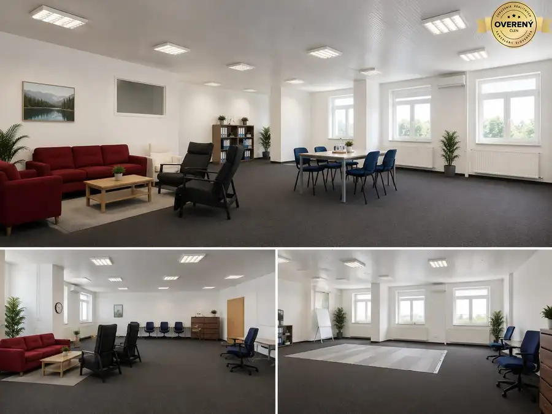
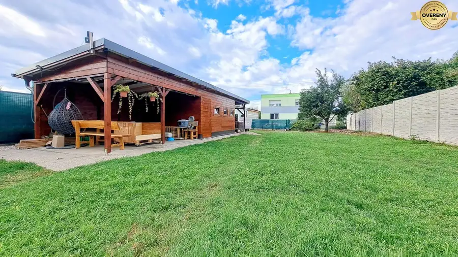
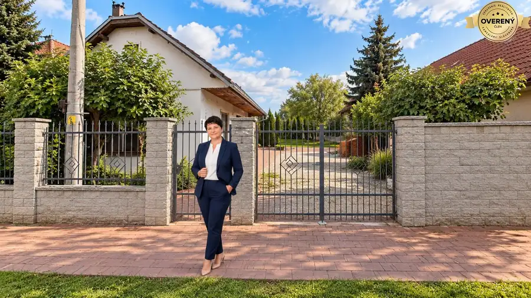

Rozsiahly areál s penziónom a bývalým mlynom
Trnovec nad Váhom
- Plocha3000 m²
- Stavnutná rekonštrukcia
O nehnuteľnosti
Ponúkame na predaj jedinečný komerčný a investičný areál v obci Trnovec nad Váhom o celkovej rozlohe cca 3 000 m² (30 árov), skladajúci sa z dvoch samostatných budov so širokými možnosťami využitia - penzión, reštaurácia, ubytovacie zariadenia, eventový priestor alebo developerský projekt.
Súčasťou areálu je aj rozsiahly ovocný sad s desiatkami plodiacich stromov a kríkov.
Budova č. 1 – bývalý penzión a reštaurácia po rozsiahlej rekonštrukcii
Budova slúžila v 60.-70. rokoch ako ubytovňa a penzión pre približne 100 osôb. Objekt prešiel kompletnou rekonštrukciou a ponúka okamžité využitie na podnikanie i ubytovanie.
Rekonštrukcia a technický stav:
kompletne nové vykurovanie
nové rozvody elektriny
nové rozvody vody
cirkulácia teplej vody
nové plastové okná a dvere
kompletné zateplenie polystyrénom
spodná časť objektu z bielej tehly s hrúbkou cca 55 cm
horné poschodie riešené nadstavbou typu kváder
celý objekt je kompletne podsklepený
K objektu patria aj pôvodné štvordielne dvere k penziónu, ktoré sú momentálne uskladnené v budove mlyna a je možné ich vrátiť späť do pôvodného stavu.
Dispozícia objektu
1. poschodie - ubytovacia časť
5 veľkých izieb s rozmermi cca 5,5 × 4,5 m
každá izba má vlastnú kúpeľňu:
sprcha
umývadlo
toaleta
letná terasa cca 3 × 2 m
zimná terasa cca 7 × 3 m
Prízemie
kuchyňa cca 8,5 × 4,5 m
izby cca 3,5 × 5 m
5× sociálne zariadenie
reštauračný priestor s možnosťou otvorenej dispozície
súčasné priečky sú riešené prevažne sadrokartónom – možnosť jednoduchej zmeny dispozície
3 samostatné vstupy
Suterén / piváreň
7 veľkých miestností
kúpeľňa
kotolňa
Budova č. 2 – historický mlyn a bývalé stajne
Druhá budova je historický objekt z bielej tehly postavený na prelome 19. a 20. storočia. Pôvodne slúžil ako mlyn, následne bol upravený na ustajnenie dostihových koní.
Charakteristika:
3 podlažia
vysoké stropy
otvorené priestory
pôvodne 15 boxov pre kone
historický industriálny charakter
celý objekt je podsklepený
vhodné na prestavbu na:
loftové bývanie
galérii
wellness
stajne
eventový priestor
sklady alebo ateliéry
Inžinierske siete:
voda
kanalizácia
elektrina
plyn
Studňa:
kopaná studňa
priemer cca 1,2 m
hĺbka cez 15 m
Pozemok a sád
Celý areál je zasadený do udržiavaného ovocného sadu:
cca 70 ovocných stromov:
jablone
hrušky
slivky
marhule
broskyne
čerešne
cca 80 kríkov:
čierne ríbezle
červené ríbezle
egreše
viac kríkov kvalitného plodiaceho hrozna
Cena za celý areál vrátane oboch budov a pozemkov:
1 150 000EUR
V prípade záujmu o prehliadku alebo ďalších informácií nás kontaktujte na tel. .
Text a fotografie sú autorským dielom realitnej kancelárie Real Dreams.
Parametre
| Rozloha pozemku | 3000 m² |
|---|---|
| Celková rozloha | 3000 m² |
| Úžitková plocha | 3000 m² |
| Poschodie | zvýšené prízemie |
| Počet poschodí | 2 |
| Stav | nutná rekonštrukcia |
| Plyn | áno |
| Kúpeľňa | áno |
| Pivnica | áno |
| Garáž | nie |
| Výťah | nie |
| Inžinierske siete | áno |
| Postavené z | tehla |
| Zariadenie | čiastočne |
| Zateplený objekt | nie |
| Krb | nie |
| Klimatizácia | nie |
| Káblová televízia | nie |
| Energetický certifikát | nie |
| Bezbariérový prístup | nie |
| Dátum zverejnenia | 23. 5. 2026 |
Kde to je
Mohlo by Vás zaujímať

Nebytové priestory7 8 159 €Prenájom výrobnej haly a kancelárskych priestorov 780 m² Kráľová nad Váhom 780 m² Ponúkame na prenájom rozsiahly výrobno-skladový areál o celkovej výmere 780 m² v obci Kráľová nad Váhom. Priestory sú vhodné na výrobu, skladovanie,…
Pozemok3 80 000 €Stavebný pozemok v obci Kráľová nad Váhom Kráľová nad Váhom 381 m² Ponúkame Vám na predaj rovinatý, slnečný a oplotený pozemok o výmere 381 m2 (šírka pozemku: 13,5 - 14 m ) v zastavanej časti v obci Kráľová nad…
Pozemok9 187 000 €Stavebný pozemok v obci Dlhá nad Váhom Dlhá nad Váhom 1436 m² Exkluzívne Vám ponúkame na predaj rovinatý, slnečný a oplotený pozemok o veľkorysej výmere 1 436 m2 v zastavanej časti v obci Dlhá nad Váhom, okres…